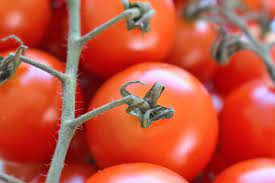
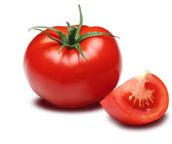

Po mano papo retissimo eu amo tomates de verdade olha esse tomatão aqui galudo e vermelhinho
Se voce tem TDH tambem temos uma grande imagem sem fundo para esse seu cerebro de peixinho dourado não te distrair da beleza dessa obra
Nunca confunda tomates com cenouras, NUNCA